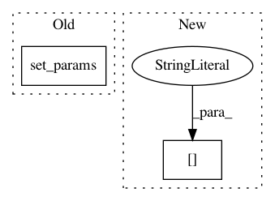

c95d470a391216cfe96e717840b2cef8d053f7b1,art/defences/variance_minimization.py,TotalVarMin,__call__,#TotalVarMin#Any#Any#Any#Any#Any#Any#Any#Any#,40
Before Change
:rtype: `np.ndarray`
if prob is not None:
self.set_params(prob=prob)
if norm is not None:
self.set_params(norm=norm)
After Change
params["prob"] = prob
if norm is not None:
params["norm"] = norm
if lamb is not None:
params["lamb"] = lamb
In pattern: SUPERPATTERN
Frequency: 3
Non-data size: 2
Instances
Project Name: IBM/adversarial-robustness-toolbox
Commit Name: c95d470a391216cfe96e717840b2cef8d053f7b1
Time: 2019-01-10
Author: Maria-Irina.Nicolae@ibm.com
File Name: art/defences/variance_minimization.py
Class Name: TotalVarMin
Method Name: __call__
Project Name: ncullen93/torchsample
Commit Name: 0c6493a064b94e92ed430001fc7d72100ad53801
Time: 2017-04-20
Author: ncullen@Nicks-MacBook-Pro.local
File Name: torchsample/modules/super_module.py
Class Name: SuperModule
Method Name: fit_loader
Project Name: IBM/adversarial-robustness-toolbox
Commit Name: 78604bdd9729e62b290823ad64e0d8de28da477a
Time: 2017-06-08
Author: valentina.zantedeschi@ibm.com
File Name: src/attackers/fast_gradient.py
Class Name: FastGradientMethod
Method Name: generate